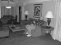
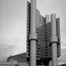
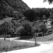
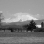
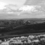
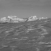

Project 4 / Scene Recognition with Bag of Words
Test Image from 15 scenes. (Store)
The goal of this project is to explore the best combination of feature representation method and classification strategy in 15 scenes dataset. We start from some very basic methods, for example we extract our features from tiny images and classify them by using nearest neighbor classifier. Then, we use SIFT bag-of-word features and linear SVM classifier to improve our performance. Next, we add GMM & Fisher encoding method to refine our features and Non-linear SVM to strengthen our classification. In the end, we use SVM RFB Kernel Classifier from LibSVM to optimize performance.
| Feature Representation | Classifier | Best Accuracy(%) |
|---|---|---|
| Tiny images | 1-Nearest Neighbor | 15.3% |
| Bag of SIFT | 1-Nearest Neighbor | 50.4% |
| Bag of SIFT | Linear SVM | 57.5% |
| Bag of SIFT | Non-linear SVM | 70.0% |
| GMM & Fisher encoding | Non-linear SVM | 80.1% |
| GMM & Fisher encoding | SVM RFB Kernel (libsvm) | 81.8% |
Project 4 Outline:
- Tiny Images Representation and 1-Neartest Neighbor Classifier
- SIFT bag-of-word Representation and Linear SVM Classifier
- GMM & Fisher Encoding Representation and Non-Linear SVM Classifier
- Extra-Credit Experiments
1.Tiny Images Representation and 1-Neartest Neighbor Classifier
In tiny images representation, we simple resize our image to 16x16 and take it as a feature. After running all images in our training set, we get 1500 features. Then, in 1-nearest neighbor approach, we enumerate all 1500 images in our testing set, calculate their features by using tiny images representation. Then we calculate Euclidean distance between training and testing features. In the end, we categorize our testing classes by choosing the minimum euclidean distance between our traing and testing features. Specifically, tiny image representation retrieves image's feature from resizing image to a smaller size, 16x16 in our case. 1-Nearest neighbor classifier categorizes input image's class to the class has minimum distance between input image's feature and training features in this class.
1.1 Code Example: Tiny Images Representation
[m,~]=size(image_paths); %m=1500
image_feats=zeros(m,256); %resize to 16x16=256
for i=1:m
image_feats(i,:)=imresize(imread(image_paths{i}),[1 256]);
end
%image(image2); Show image
end
1.2 Code Example: 1-Nearest Neighbor
[m,~]=size(train_image_feats); %m=1500
D = vl_alldist2(train_image_feats',test_image_feats'); %calculate distance
predicted_categories=cell(m,1);
row_min=0;
for i=1:m %find minimum distance in each row
row_min=min(D(i,:));
for j=1:m
if D(i,j)==row_min
predicted_categories{i}=char(train_labels(j));
end
end
end
2.SIFT bag-of-word Representation and Linear SVM Classifier
In SIFT bag-of-word representation, we first build vocabulary by using kmeans centering. Specifically, we collect SIFT features from training images at first. Then, we use k-means with our preset vocabulary size to find K centers among our SIFT features. These K centers are our vocabulary. Seconly, we count vocabulary histograms of both training and testing dataset. After this procedure, we will get a matrix to count how many times each vocabulary appears in each image. In the end, we train linear SVM to classify images in our testing set. In Linear SVM, we use Wx+B to approximate our SVM model, which W is our weights, x is training features from SIFT bag-of-word representation, and B is the offset.
2.1 Code Example: Build Vocabulary
%example code
[m,~]=size(image_paths);
total_SIFT_features=[];
for i=1:m
img=imread(image_paths{i}); %read image
[~, SIFT_features] = vl_dsift(single(img),'Fast','Step',10); %get SIFT features
total_SIFT_features=[total_SIFT_features SIFT_features]; %horcat SIFT features
end
[centers, ~] = vl_kmeans(single(total_SIFT_features), vocab_size); %cal. k-centers
vocab=centers';
2.2 Code Example: SIFT bag-of-word
load('vocab.mat'); %d(128) x vocab(200)
vocab_size = size(vocab, 2);
[m,~]=size(image_paths);
image_feats=zeros(m,vocab_size); %1500x200
for i=1:m
img=imread(image_paths{i});
[~, SIFT_features] = vl_dsift(single(img),'Fast','Step',5); %get SIFT features
[indices, ~] = knnsearch(single(vocab), single(SIFT_features)', 'K', 1); %find 1-nearest neighbor
image_feats(i,:) = transpose(histc(indices, 1:vocab_size)); %Count histogram
image_feats(i,:)=image_feats(i,:)/sum(image_feats(i,:)); %normalize to 1
end
2.3 Code Example: Linear SVM classifier
categories = unique(train_labels);
num_categories = length(categories);
num_images=size(train_image_feats,1);
LAMBDA=0.0005;
predicted_categories=zeros(num_images,1); %1500x1
for i=1:num_categories %Digitize label
labels = -ones(num_images,1);
labels(strcmp(categories{i}, train_labels)) = 1;
[W B]=vl_svmtrain(train_image_feats', labels, LAMBDA);
W_total(i,:)=W; %15*128
B_total(i,:)=B; %15*1
end
confidence=-ones(num_images,num_categories);
predicted_categories={};
for i=1:num_images %Find minimum distance
confidence(i,:)=W_total*transpose(test_image_feats(i,:))+B_total;
max_confidence=max(confidence(i,:));
for j=1:num_categories
if confidence(i,j)==max_confidence
predicted_categories{i,1}=categories{j};
end
end
end
3.GMM & Fisher Encoding Representation and Non-Linear SVM Classifier
In this section, we use Gaussian Mixture Model(GMM) and Fisher Encoding to retrieve features and employ Non-linear SVM Classifier to improve our accuracy. In GMM building, which is similar as vocabulary building in previous section, we get SIFT features at the very beginning. Then, we enumerate all images from our training set to get SIFT features and concatenate them together. Finally, we use vl_gmm function from vl_feat library to get the Gaussian Approximation results (means, covariances, priors). Secondly, after building GMM models, we use Fisher Encoding method. In this part, which is similar to SIFT bag-of-word, we calculate SIFT features from our input image and fitting these features to our GMM models. Specifically, we put Gaussian parameters (means, covariances, priors) built by previous step and SIFT features to vl_feat built-in function vl_fisher to get fisher encoding features. In Non-Linear SVM, we Olivier Chapelle's MATLAB code. By using Kernel SVM, we can have accuracy up to 81.6%.
3.1 Code Example: Build GMM
% Parameters
step_size = 15;
step_size=15;
bin_size=8;
[m,~]=size(image_paths);
data=[];
for i=1:m
img=imread(image_paths{i});
[~, SIFT_features]=vl_dsift(single(img), 'fast', 'step', step_size, 'size', bin_size);
data=horzcat(data, SIFT_features);
end
[means, covariances, priors]=vl_gmm(single(data), vocab_size);
stats=[means' covariances' priors];
3.2 Code Example: Get Fisher Encoding
% Parameters
step_size = 5;
bin_size = 8;
image_feats = [];
for i = 1 : size(image_paths)
img = imread(char(image_paths(i)));
[~, SIFT_features] = vl_dsift(single(img), 'fast', 'step', step_size, 'size', bin_size);
image_feats(i, :) = vl_fisher(single(SIFT_features), means, covariances, priors, 'Improved');
end
3.3 Code Example: Non-Linear SVM Kernel Method
categories = unique(train_labels);
num_categories = length(categories);
num_train=size(train_image_feats,1);
num_test=size(test_image_feats,1);
norm_train = sum(train_image_feats(1:num_test,:).^2,2);
norm_test = sum(test_image_feats(1:num_test,:).^2,2);
K = exp(-0.5*(repmat(norm_train ,1,num_train)+repmat(norm_train',num_train,1)...
-2*train_image_feats(1:num_train,:)*transpose(train_image_feats(1:num_train,:))));
X = train_image_feats;
for i=1:num_categories
Y = -ones(size(train_image_feats,1),1);
Y(strcmp(categories{i}, train_labels)) = 1;
[W,B] = primal_svm(0, Y, 0.0005); %From Olivier Chapelle's MATLAB code
W_total(i,:)=W;
B_total(i,:)=B;
end
K_test = exp(-0.5*(repmat(norm_test ,1,num_test)+repmat(norm_train',num_test,1)...
-2*test_image_feats(1:num_test,:)*transpose(train_image_feats(1:num_test,:))));
predicted_categories={};
for i=1:num_test
confidence=[];
for j=1:num_categories
confidence(j,:) = dot(transpose(W_total(j,:)), K_test(i,:)) + B_total(j,:);
end
[~,index] = max(confidence);
predicted_categories(i) = categories(index);
end
predicted_categories=transpose(predicted_categories);
4. Extra-Credit Experiments
4.1 Code Example: Sampling Features from Guassian Pyramid (+3): For sampling features from Gaussian Pyramid, we need to emply Gaussian Filter and a for-loop to resize our input image. The following code example is the whole process of this gaussian pyramid. However, we only highlight the modified portion to emphasize the pyramid part.
%Gaussian Parameters:
level=3;
std=2;
%data = [];
%for i = 1 : size(image_paths)
for j=1 : level
img = imread(char(image_paths(i)));
filter_img=imgaussfilt(img,std);
resize_img=imresize(filter_img,0.5^(j-1),'bilinear');
% [~, SIFT_features] = vl_dsift(single(resize_img), 'fast', 'step', step_size, 'size', bin_size);
% data = horzcat(data, SIFT_features);
end
%end
4.2 Code Example: Sampling Features from Spatial Pyramid (+3): For sampling features from Spatial Pyramid, we need to cut our input image into pieces. The following code example only demonstrate level 0, which is undivided, and level 1, which is original image divied into 4 pieces for simplicity. After concatenate features from different pyramid levels, we put these spatial information into our vl_gmm function.

%Spatial Pyramid:
% Only demo Leve0 and Level 1 for simplicity
for i = 1 : size(image_paths)
%Level=0: (original image)
img = imread(image_paths{i});
[W,L]=size(img);
[~, SIFT_features_L0] = vl_dsift(single(img), 'fast', 'step', step_size, 'size', bin_size);
%Level=1: (1/4 original images)
img_L1_1=img(1:int16(W/2),1:int16(L/2));
img_L1_2=img(1:int16(W/2),int16(L/2)+1:L);
img_L1_3=img(int16(W/2)+1:W,1:int16(L/2));
img_L1_4=img(int16(W/2)+1:W,int16(L/2)+1:L);
[~, SIFT_features_L1_1] = vl_dsift(single(img_L1_1), 'fast', 'step', step_size, 'size', bin_size);
[~, SIFT_features_L1_2] = vl_dsift(single(img_L1_2), 'fast', 'step', step_size, 'size', bin_size);
[~, SIFT_features_L1_3] = vl_dsift(single(img_L1_3), 'fast', 'step', step_size, 'size', bin_size);
[~, SIFT_features_L1_4] = vl_dsift(single(img_L1_4), 'fast', 'step', step_size, 'size', bin_size);
data = horzcat(data, SIFT_features_L0, SIFT_features_L1_1, SIFT_features_L1_2, SIFT_features_L1_3, SIFT_features_L1_4);
end
4.3 Different vocabulary sizes (+3): For testing the influence of different vocabulary size, we test vocabulary size from 10, 20, 50, 100, 200, 400, 1000 on our optimum result, which is fisher encoding and non-linear SVM. However, the difference is trivial. We get accuracy from 72.3 when vocabulary size is 10 and 80.5 when vocabulary size is 1,000. We didn't have result at vocabulary size=10,000 because problem about out of memory.
| GMM & Fisher+SVM RFB Kernel (LibSVM) | Best Accuracy(%) |
|---|---|
| Vocabulary Size 10 | 72.3% |
| Vocabulary Size 20 | 74.3% |
| Vocabulary Size 50 | 77.3% |
| Vocabulary Size 100 | 80.1% |
| Vocabulary Size 256 | 80.3% |
| Vocabulary Size 400 | 81.8% |
| Vocabulary Size 1000 | 80.5% |
Scene classification results visualization
Accuracy (mean of diagonal of confusion matrix) is 0.815
| Category name | Accuracy | Sample training images | Sample true positives | False positives with true label | False negatives with wrong predicted label | ||||
|---|---|---|---|---|---|---|---|---|---|
| Kitchen | 0.730 |  |
 |
 |
LivingRoom |
 LivingRoom |
 InsideCity |
 Store |
|
| Store | 0.820 |  |
 |
 |
Kitchen |
LivingRoom |
 Kitchen |
 Mountain |
|
| Bedroom | 0.670 |  |
 |
 |
 |
 Kitchen |
 InsideCity |
LivingRoom |
 Office |
| LivingRoom | 0.650 |  |  |
 |
Bedroom |
 Bedroom |
 Bedroom |
Office |
|
| Office | 0.990 |  |
 |
 |
 |
 Kitchen |
Bedroom |
 Kitchen |
|
| Industrial | 0.620 |  |
 |
 |
 TallBuilding |
 Bedroom |
Kitchen |
 Highway |
|
| Suburb | 1.000 |  |
 OpenCountry |
 OpenCountry |
|||||
| InsideCity | 0.840 |  |
 |
 |
 Highway |
 Industrial |
Industrial |
TallBuilding |
|
| TallBuilding | 0.880 |  |
 |
 |
 Industrial |
 InsideCity |
Mountain |
 Industrial |
|
| Street | 0.880 |  |
 |
 |
 |
TallBuilding |
Industrial |
 InsideCity |
Industrial |
| Highway | 0.870 |  |
 |
 |
 Industrial |
 Industrial |
 Coast |
 OpenCountry |
|
| OpenCountry | 0.640 |  |
 |  InsideCity |
Forest |
 Highway |
 Coast |
||
| Coast | 0.840 |  |
 |
 |
 Mountain |
 OpenCountry |
 Mountain |
 OpenCountry |
|
| Mountain | 0.880 |  |
 |
 Industrial |
Store |
 OpenCountry |
 Coast |
||
| Forest | 0.920 |  |
 |
 Mountain |
 Coast |
 OpenCountry |
 Mountain |
||
| Category name | Accuracy | Sample training images | Sample true positives | False positives with true label | False negatives with wrong predicted label | ||||
Reference
1. Computer Vision Lecture Notes: James Hays, Georgia Institute of Technology
2. S. Lazebnik, C. Schmid, and J. Ponce, "Beyond Bags of Features: Spatial Pyramid Matching for Recognizing Natural Scene Categories," CVPR 2006.
3. Li, Piji, and Jun Ma. "What is happening in a still picture?." In The First Asian Conference on Pattern Recognition, pp. 32-36. IEEE, 2011.
4.Piji Li, Jun Ma, Shuai Gao. Actions in Still Web Images: Visualization, Detection and Retrieval. The 12th International Conference on Web-Age InformationManagement (WAIM 2011). Springer, 2011.
5.Chih-Chung Chang and Chih-Jen Lin, LIBSVM : a library for support vector machines. ACM Transactions on Intelligent Systems and Technology, 2:27:1--27:27, 2011. Software available at http://www.csie.ntu.edu.tw/~cjlin/libsvm